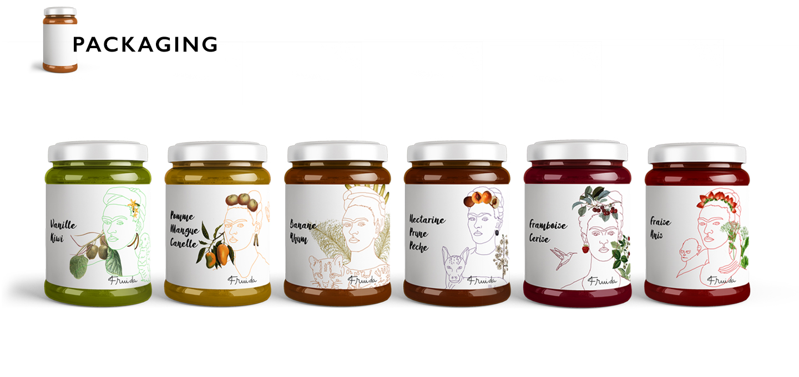
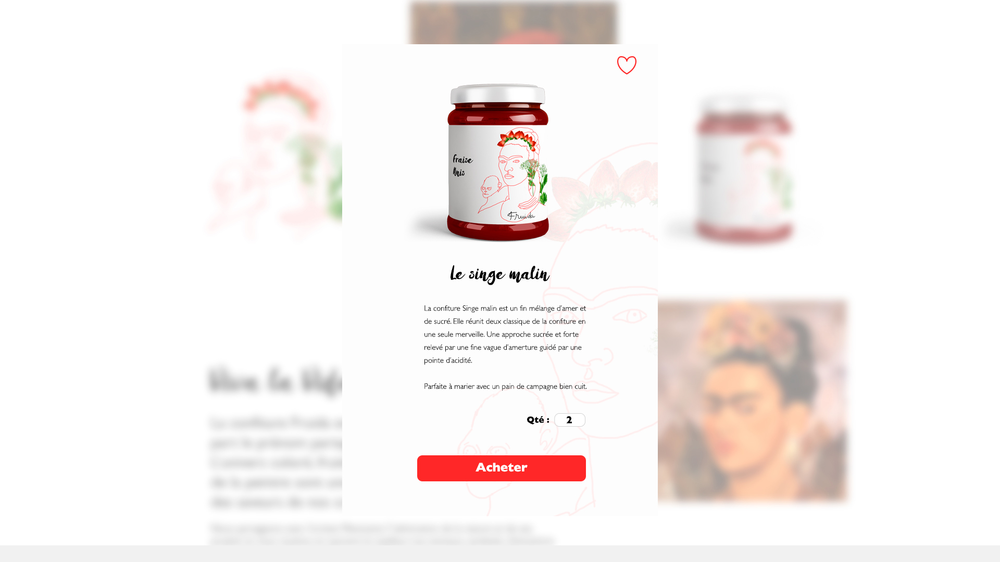
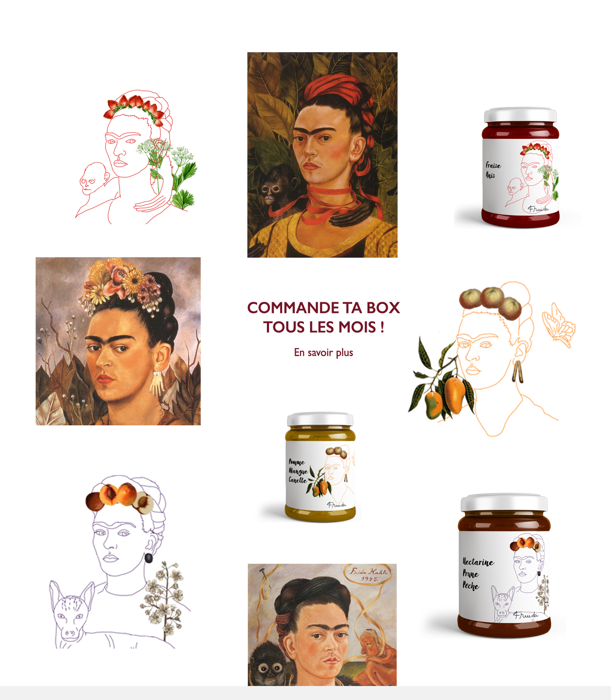
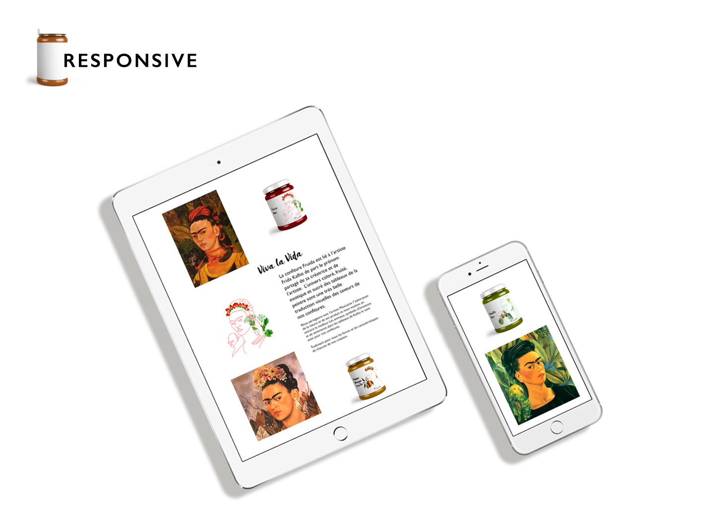
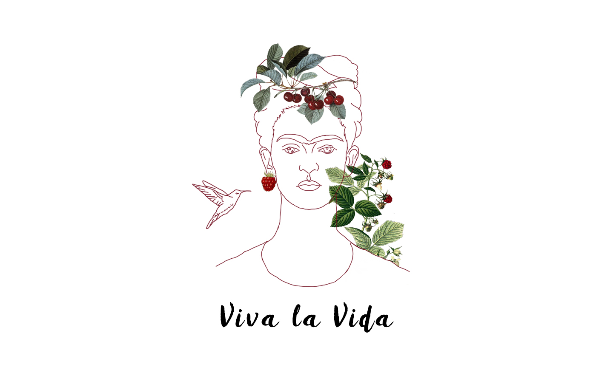

Fruida
Branding, A.D, Packaging, Webdesign
BRIEF
Découvrez les confitures Fruida 100% naturelle élaborées avec des produits issus de l’agriculture responsable : l’alliance de la nature et de notre savoir-faire.
Les fruits retenus proviennent tous d’une agriculture traditionnelle. Nous sélectionnons les meilleures variété de fruits que nous prenons soin de récolter à maturité bénéficiant ainsi en plus de nombreuses qualité gustatives, olfactives et visuelles.
Les exploitants sont engagés à ne procéder à aucun traitement chimique et nous le véirifions à chaque étapes de la production. Consommer nos confiture c’est aussi prendre soin de la nature.
Nos confitures sont des créations naturelle, elle sont produites en fonction des saisons et des récoltes. Chaque jour la nature définie nos ressources, c’est donc elle qui détermine quand et combien.
Créer une image de marque, un packaging déclinable ainsi qu'un site vitrine e-commerce.
CREATIVE ANSWER
La confiture Fruida est lié à l’artiste Frida Kalho de part le prénom partagé de sa créatrice et de l’artiste. L’univers coloré, fruité, exotique et sucré des tableaux de la peintre sont une très belle traduction visuelles des saveurs de nos confitures. Nous partageons avec l’artiste Mexicaine l’’admiration de la nature et de ses produit et nous voulons en extraire le meilleur. Les animaux, symbole, d’émotions et de sentiments dans les tableaux de Kalho le sont aussi pour nos confitures. Traduisant pour nous les forces et les caractéristiques de chacune de nos création. En reprennant l'iconographie de Frida Khalo, nous avons créer un univers graphique articulé autour des valeurs de la confiture Fruida : Naturel, exotique, savoureux, attanchant. Cette référence artistique donne à la confiture une visibilité forte ainsi qu'un impact visuel et de mémorisation intéréssant.
I hope you will enjoy the presentation.




